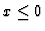
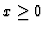

Next: Architecture of the algebraic
Up: Algebraic under constraint solver
Previous: Supported design stage
Provided facilities
What is important for supporting embodiment design is to give a designer necessary information to determine variable values. To do that, the algebraic under constraint solver provides the following facilities and design tasks are conducted based on the results.
- 1.
- Finding out constraints inconsistent with each other
This means to show a set of constraints which cannot be simultaneously satisfied. The designer has to relax or modify some of these constraints.
- 2.
- Obtaining new constraints
In some cases, several inequalities can be replaced by equations. For example, if we have constraints ``
'' and ``
'', these constraints are replaced by ``x=0''. This function is useful for simplifying the problem.
- 3.
- Computing several example solutions satisfying the given constraints
This function is useful for confirming there exists a real solution. If there exists a real solution, the numerical solution is computed. Otherwise, empty is returned. The designer can determine values of design variables by referring to the example solutions. Or in order to obtain preferable solutions, the designer re-compute solutions by defining additional constraints.
IMACS ACA'98 Electronic Proceedings